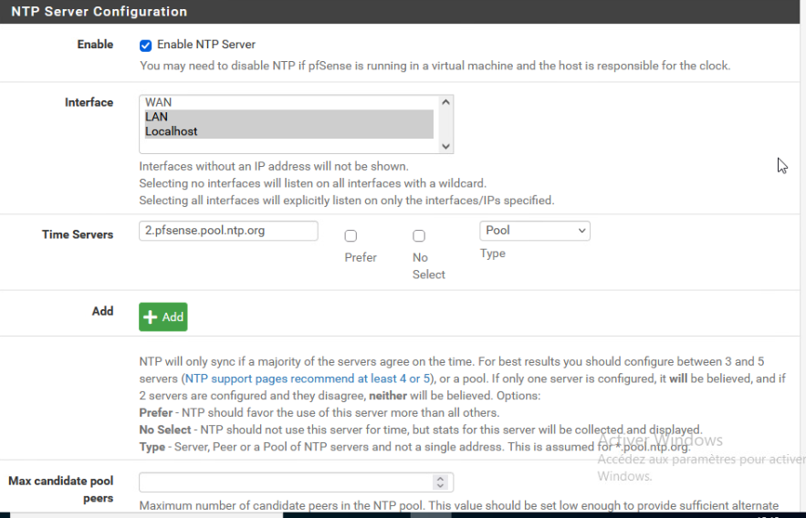
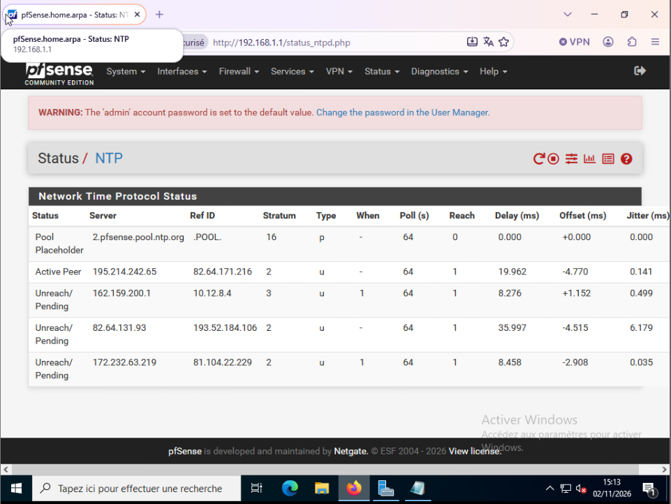
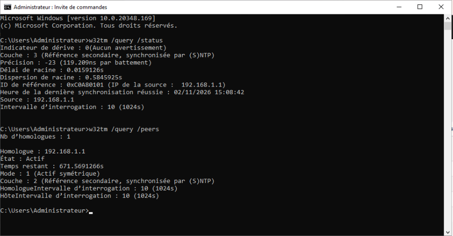
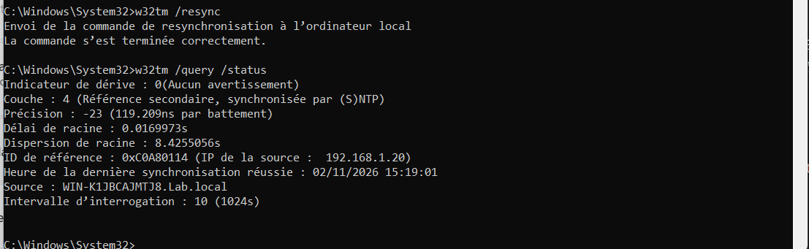
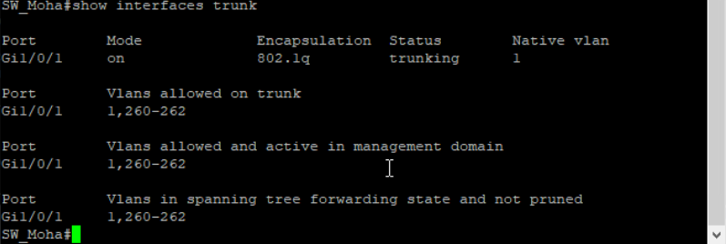
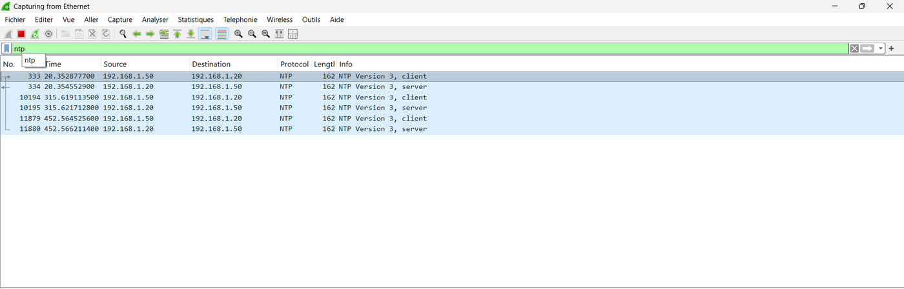
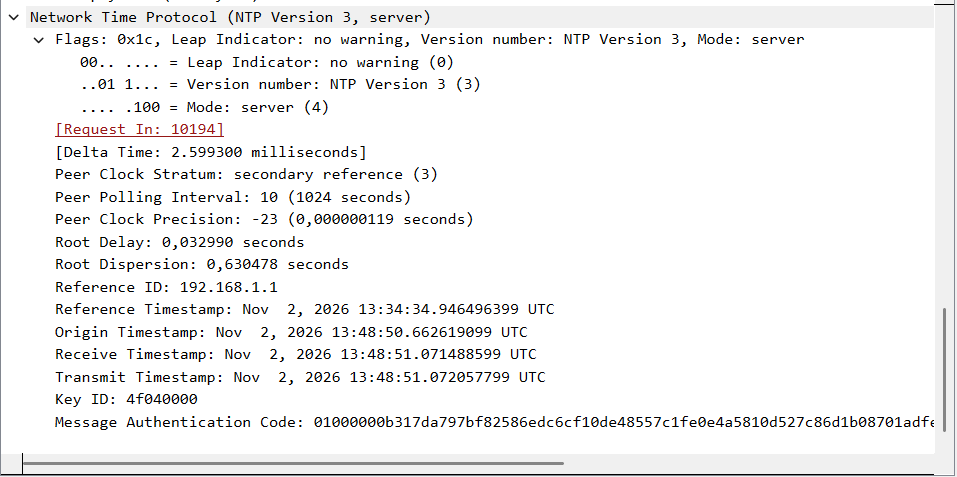

Infrastructure NTP : service de temps de l'entreprise
Atelier professionnel réalisé en équipe en novembre 2026 : synchroniser tous les équipements d'une entreprise sur une source de temps fiable.

Contexte et objectif
Le projet s'inscrit dans le cas fictif du laboratoire pharmaceutique GSB : un réseau segmenté en VLAN, des serveurs en grande partie virtualisés, et des données stratégiques. L'objectif est de mettre en place une infrastructure NTP pour que tous les équipements et serveurs soient synchronisés sur une source de temps fiable.
Pourquoi c'est important : dans un domaine Active Directory, l'authentification Kerberos tolère par défaut un écart d'horloge de 5 minutes au maximum entre deux machines. Une heure identique partout est aussi indispensable pour comparer les journaux d'événements des serveurs et des équipements réseau.
Principe : NTP fonctionne en UDP sur le port 123. Les sources de temps sont organisées en niveaux, les « stratums » : plus le chiffre est élevé, plus la machine est éloignée de la source de référence. Ici : serveur du pool, puis pfSense, puis l'AD, puis le PC du domaine.
Environnement de test
Deux machines virtuelles sur le serveur vSphere : pfSense (pare-feu et serveur NTP principal) et SRV-AD (Active Directory, DNS). Le client est un PC physique branché sur un switch Cisco, administré en SSH depuis l'AD (VLAN de management 260), relié en trunk 802.1Q au routeur multicouche. Le port du PC a été placé dans le VLAN de l'AD pour qu'ils partagent le même réseau.
Réalisation
- pfSense en serveur NTP principal : service activé dans Services > NTP > Settings, à l'écoute sur l'interface LAN, avec le pool
2.pfsense.pool.ntp.orgcomme source. - Active Directory synchronisé sur pfSense : vérifié avec
w32tm /query /statuset/peers, qui montrent pfSense comme source. - PC du domaine : l'heure est récupérée automatiquement auprès de l'AD, confirmée après un
w32tm /resync. - Analyse Wireshark des échanges NTP (UDP 123) entre le PC et l'AD, avec lecture des champs stratum et Reference ID qui confirment la hiérarchie.
Calcul du décalage d'horloge
À partir des quatre horodatages d'un échange NTP (T1 émission du client, T2 réception par l'AD, T3 émission de la réponse, T4 réception par le client), le décalage vaut θ = ((T2 − T1) + (T3 − T4)) / 2, soit environ +0,41 s, et le délai aller-retour environ 2,8 ms. L'horloge de l'AD avait donc environ 0,4 s d'avance sur celle du PC à cet instant, et le client corrige son horloge à partir de cette mesure.
Captures d'écran







Difficultés rencontrées et solutions
- Message NATIVE_VLAN_MISMATCH sur le trunk : VLAN natif aligné sur le VLAN 1. Le routage du VLAN 260 vers le réseau de l'AD a été réglé sur le multicouche avec l'aide du professeur.
- PC dans le mauvais VLAN : port déplacé du VLAN 261 au VLAN 260, celui de l'AD.
- Commande
net start w32timerefusée (erreur système 5) : le terminal doit être ouvert en administrateur. - Fuseau horaire du PC incorrect : corrigé sur Paris, sans effet sur la synchronisation qui se fait en UTC.
Conclusion et pistes d'amélioration
L'infrastructure NTP demandée est en place : pfSense se synchronise avec le pool et sert de serveur de temps principal, l'AD se synchronise sur pfSense, et le PC du domaine récupère automatiquement l'heure auprès de l'AD. La capture Wireshark confirme la hiérarchie pool, pfSense, AD, PC.
- Ajouter plusieurs serveurs de temps (3 à 5) dans pfSense, comme le recommande son aide.
- Remplacer le mot de passe administrateur par défaut de pfSense.
- Prévoir une règle de pare-feu précise (UDP 123) si des postes sont placés dans d'autres VLAN que celui de l'AD.
Compétences travaillées
Exploiter, dépanner et superviser une solution d'infrastructure réseau (Bloc 2), et garantir la disponibilité et l'intégrité des services (Bloc 3).